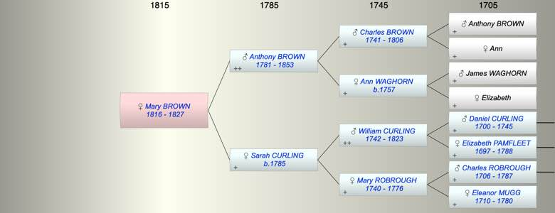

| [Index] |
| Mary BROWN (1816 - 1827) |
|  |
| b. 11 Mar 1816 at City of London |
| d. 1827 at City of London aged 11 |
| Parents: |
| Anthony BROWN (1781 - 1853) |
| Sarah CURLING (1785 - ) |
| Events in Mary BROWN (1816 - 1827)'s life | |||||
| Date | Age | Event | Place | Notes | Src |
| 11 Mar 1816 | Mary BROWN was born | City of London | Note 1 | ||
| 1827 | 11 | Mary BROWN died | City of London | Note 2 | |
| Created on a Mac™ using iFamily for Mac™ on 8 Oct 2023 |